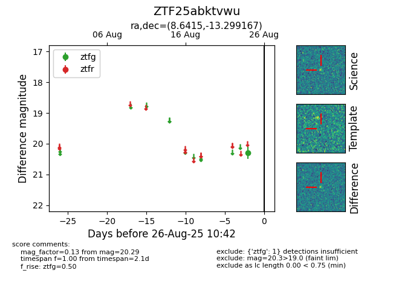

Target ZTF25abktvwu at 2025-08-26 10:53, see:
FINK: fink-portal.org/ZTF25abktvwu
Lasair: lasair-ztf.lsst.ac.uk/objects/ZTF25abktvwu
ALeRCE: alerce.online/object/ZTF25abktvwu
alt names
ZTF25abktvwu (ztf,fink)
coordinates:
equatorial (ra, dec) = (8.6415,-13.29917)
galactic (l, b) = (106.1816,-75.61936)
photometry
last ztfg=20.29
1 ztfg detections
